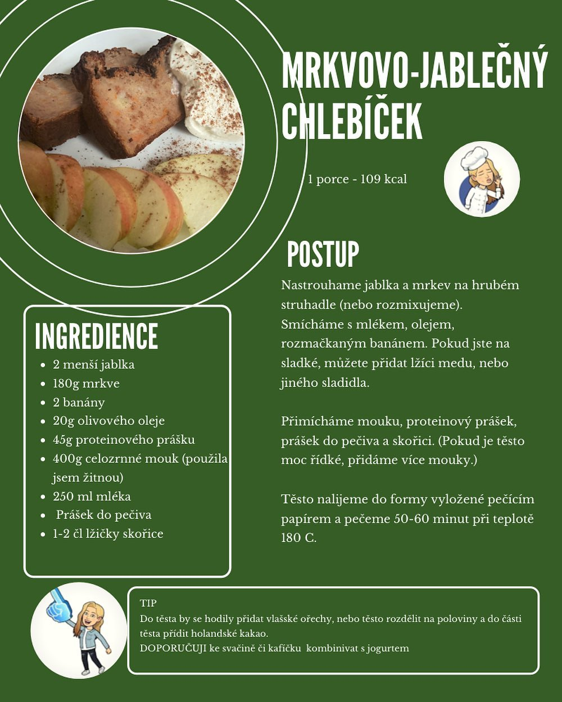

Ovocný chlebíček podľa @about_journey_health_and_life — Normy Jedál
Jako🍏🍎🤍přidávám další receptík, tentokrát na mrkvovo- jablečný chlebíček. 🍎🥕🍌
Opět první pokus, a jako vždy převzatý a upravený recept k obrazu svému 😁💁♀️
‼️Vyzkoušejte také a podělte se s námi o to, jak chlebík ještě vylepšit ‼️
#ovocnychlebicek #buchtaplnaovoce
#kekaficku #healthysnack #healthysnackideas #healthyrecipe #pecuzdrave #zdravasvaca #zdravyrecept #upecavylepsi #givemelikes #givemefollow